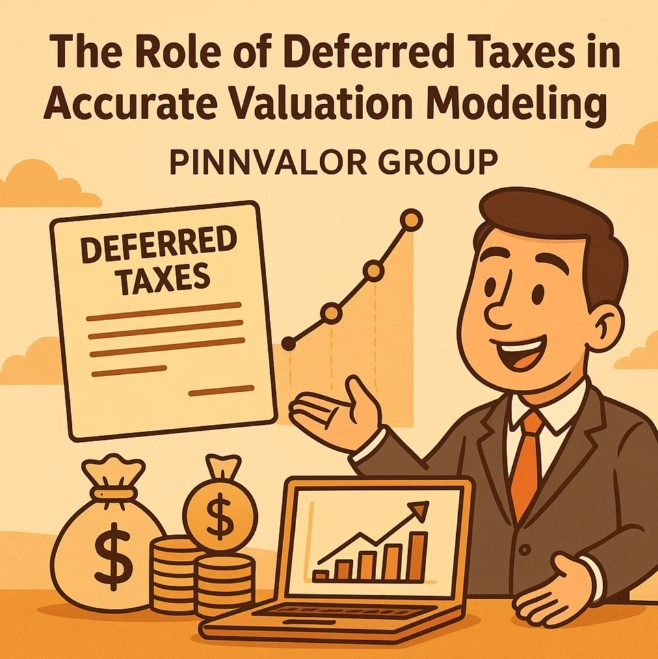

The Role of Deferred Taxes in Accurate Valuation Modeling
In the world of corporate finance and valuation, small accounting nuances can have significant implications. One such often-overlooked yet crucial element is deferred taxes. Whether you’re a valuation analyst, investment banker, or corporate CFO, understanding how deferred taxes affect valuation models is key to producing accurate and credible results.
In this post, we’ll break down the role of deferred taxes in valuation modeling, why they arise, how they impact enterprise and equity value, and how to account for them properly in DCF and other methodologies.
Could a line item on your balance sheet be quietly skewing your valuation?
A DCF model without deferred tax adjustments is like a map without topography—flat, incomplete, and misleading.
What Are Deferred Taxes?
Deferred taxes represent the difference between the amount of tax recognized in financial statements (under accounting rules) and the actual tax payable to authorities (under tax rules). These differences arise due to timing—when income or expenses are recognized under GAAP/IFRS versus tax law.
There are two main types:
- Deferred Tax Assets (DTAs): Future tax savings due to deductible temporary differences or carryforwards (e.g., net operating losses).
- Deferred Tax Liabilities (DTLs): Future tax payments due to taxable temporary differences (e.g., accelerated depreciation for tax purposes).
Why Deferred Taxes Matter in Valuation
Deferred taxes affect valuation in both theory and practice:
1. Impact on Cash Flows
Valuation models—especially the Discounted Cash Flow (DCF)—rely heavily on future cash flows. Since deferred taxes represent future inflows or outflows, they impact free cash flow (FCF). Ignoring them could lead to overstating or understating a firm’s cash-generating ability.
- DTLs typically reduce future cash flows.
- DTAs may increase future cash flows, assuming the company is profitable enough to utilize them.
2. Adjustment to Enterprise Value or Equity Value
In some valuation approaches (e.g., comparable company analysis or precedent transactions), you start with enterprise value. To derive equity value, you subtract debt and non-operating liabilities, which may include DTLs, depending on context.
3. Book Value vs. Market Value Discrepancy
Deferred tax positions are based on accounting judgments and may not reflect actual market values. Analysts must assess whether DTAs will truly be realized or if DTLs will actually come due, based on the company’s earnings forecast.
Modeling Deferred Taxes in a DCF
Here’s how to incorporate deferred taxes in a DCF model:
Step 1: Forecast Taxes Accurately
Use pre-tax income and adjust for permanent and temporary differences. Then calculate:
- Cash Taxes Paid (based on tax rules)
- Tax Expense (based on accounting standards)
The difference between these gives the change in deferred tax balance.
Step 2: Adjust Operating Cash Flows
Use the taxes actually paid, not the tax expense, when calculating free cash flow. This ensures cash flow is realistic.
Step 3: Treat DTAs/DTLs as Non-Operating Adjustments (if needed)
Depending on your valuation method, include DTAs or DTLs in the balance sheet adjustments when moving between enterprise value and equity value.
Valuation Adjustments and Practical Considerations
1. Reassess the Realizability of DTAs
Will the company generate enough future taxable income to use its deferred tax assets? If not, write them down in the model. This is especially important for startups or companies with operating losses.
2. Unwind DTLs Over Time
DTLs typically decrease over time as the temporary differences reverse. Model this unwinding explicitly in long-term forecasts to match tax cash flow accurately.
3. M&A Implications
- DTAs may offer tax shields to the buyer.
- DTLs may inflate liabilities and reduce purchase price.
- Step-ups in asset values (from purchase accounting) can generate new DTLs.
4. Valuation Multiples
When using EBITDA or EBIT multiples:
- DTLs and DTAs don’t directly affect the numerator.
- But they must be considered when interpreting enterprise or equity value, especially for tax-intensive industries.
Common Mistakes to Avoid
- ❌ Ignoring deferred taxes completely in DCF models.
- ❌ Using tax expense instead of actual cash taxes paid.
- ❌ Failing to assess the usability of DTAs.
- ❌ Double-counting tax effects in both cash flow and balance sheet adjustments.
Conclusion
Deferred taxes may be technical, but they are far from trivial in valuation. Properly accounting for them ensures realistic cash flow projections, accurate enterprise value calculations, and fair equity value assessments. As financial models become more sophisticated and scrutiny increases, deferred taxes are a key piece of the valuation puzzle you can’t afford to overlook.